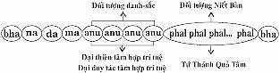
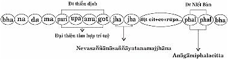

|
Tìm hiểu PHÁP HÀNH THIỀN TUỆ - Tỳ khưu HỘ PHÁP
PHẦN II PHÁP HÀNH (BHĀVANĀ) 8. QUẢ BÁU ÐẶC BIỆT CỦA THIỀN TUỆ Quả báu của thiền tuệ không sao kể siết được, song có thể tóm lược 4 quả báu chính của pháp hành thiền tuệ là: Diệt đoạn tuyệt mọi tham ái, phiền não, ác pháp. 2- Ariyaphalarasānubhavana: Thọ hưởng quả vị giải thoát của Thánh Quả. 3- Nirodhasamāpattisamāpajjanasamatthatā: bậc Thánh Bất Lai và bậc Thánh Arahán có thể nhập Diệt thọ tưởng định. 4- Āhuṇeyyabhāvādisiddhi: bậc Thánh nhân đã thành tựu có được Ân Ðức Tăng Āhuṇeyya.... Giải Thích: 1- Diệt đoạn tuyệt mọi tham ái, phiền não, ác pháp Bốn bậc Thánh Ðạo Tuệ, từ bậc thấp đến bậc cao, mỗi bậc Thánh Ðạo Tuệ đều có khả năng đặc biệt diệt đoạn tuyệt được tham ái, phiền não, ác pháp tùy theo khả năng của mỗi bậc Thánh Ðạo Tuệ. (Giải thích xong ở phần "Diệt đoạn tuyệt phiền não" trong phần "Pháp hành thiền tuệ" xem trang 205-213). 2- Thọ hưởng quả vị giải thoát của Thánh Quả 4 Thánh Quả Tâm hưởng quả bằng 2 cách:
2.1- Hưởng quả vị theo Thánh Ðạo lộ trình tâm 4 Thánh Ðạo Tâm là siêu tam giới thiện tâm, căn cứ theo vị trí Thánh Ðạo lộ trình tâm, sau sát na Thánh Ðạo Tâm diệt, liền tiếp theo sau Thánh Quả Tâm sanh, là quả trực tiếp của Thánh Ðạo Tâm cho quả không có thời gian ngăn cách (akālika). Khi chứng đắc Thánh Ðạo nào liền cho Thánh Quả ấy chỉ sau một sát na tâm sanh diệt trong cùng Thánh Ðạo lộ trình tâm như sau:
Ðó là 4 Thánh Quả Tâm là quả tương xứng của 4 Thánh Ðạo Tâm, chính là quả báu của pháp hành thiền tuệ, cho quả trong cùng Thánh Ðạo lộ trình tâm (Maggavīthicitta). 2.2- Hưởng quả khi nhập Thánh Quả Ðịnh Bậc Thánh nhân nào chỉ có thể nhập Thánh Quả Ðịnh của bậc Thánh nhân ấy, để hưởng vị giải thoát an lạc Niết Bàn (vimuttirasa) ngay trong kiếp hiện tại.
Bậc Thánh nhân đã chứng đắc Thánh Quả cuối cùng nào, chỉ có thể nhập Thánh Quả Ðịnh ấy mà thôi. Bậc Thánh nhân bậc thấp không thể nhập Thánh Quả Ðịnh bậc cao, vì chưa chứng đắc Thánh Quả ấy; và bậc Thánh nhân bậc cao cũng không nhập Thánh Quả Ðịnh bậc thấp. 2.3- Nhập Thánh Quả Ðịnh khác với nhập thiền định Bậc Thánh nhân khi đã chứng đắc bậc Thánh Ðạo nào, có thể trực tiếp nhập bậc Thánh Quả Ðịnh ấy. Song bậc Thánh nhân đã chứng đắc đến ngũ thiền sắc giới và tứ thiền vô sắc giới một cách thuần thục rồi, bậc Thánh nhân ấy có thể nhập thiền định bất cứ bậc thiền nào mà mình muốn. Bậc Thánh nhân có thể nhập bậc thiền thấp, hoặc bậc thiền cao theo ý muốn của mình, hoặc nhập thiền định theo tuần tự từ bậc thiền thấp, đến bậc thiền cao, rồi từ bậc thiền cao, xuống bậc thiền thấp. 2.4- Ðiều kiện nhập Thánh Quả Ðịnh Bậc Thánh nhân muốn nhập Thánh Quả Ðịnh để hưởng vị giải thoát tịch tịnh an lạc Niết Bàn, trong suốt thời gian ấn định theo sự phát nguyện, cần phải có đủ 3 chi pháp như sau:
2.5- Giai đoạn nhập Thánh Quả Ðịnh Bậc Thánh nhân nhập Thánh Quả Ðịnh trải qua 2 giai đoạn: Giai đoạn đầu: Phát nguyện rằng: "Nguyện xin nhập Thánh Quả Ðịnh suốt thời gian 1 giờ, 2 giờ... 1 ngày, 2 ngày... (nhưng không đến 7 ngày) xin Thánh Quả Tâm phát sanh liên tục không ngừng suốt thời gian phát nguyện ấy". Giai đoạn nhập Thánh Quả Ðịnh: Bậc Thánh nhân nhập Thánh Quả Ðịnh quán xét rằng:
Ví dụ: Hành giả là bậc Thánh Bất Lai đã chứng đắc 5 bậc thiền sắc giới, muốn nhập Thánh Quả Ðịnh, thì chỉ có thể nhập Bất Lai Thánh Quả Ðịnh mà thôi. Song trong 5 bậc thiền sắc giới ấy, bậc Thánh Bất Lai có thể muốn dùng bậc thiền nào làm nền tảng để nhập Bất Lai Thánh Quả Ðịnh tùy ý. Bậc thiền ấy trở thành bậc thiền siêu tam giới, vì có Niết Bàn làm đối tượng. [6] Bậc Thánh Bất Lai, sau khi phát nguyện nhập Bất Lai Thánh Quả Ðịnh xong, tiến hành thiền tuệ, có danh pháp, sắc pháp làm đối tượng, bắt đầu từ trí tuệ thiền tuệ thứ tư là Udayabbayānupassañāṇa: Trí tuệ thiền tuệ thấy rõ, biết rõ sự sanh, sự diệt của danh pháp, sắc pháp, hiện rõ trạng thái vô thường, trạng thái khổ, trạng thái vô ngã của danh pháp, sắc pháp, và phát triển trí tuệ thiền tuệ tuần tự Bhaṅgānupassanāñāṇa,... cho đến Anulomañāṇa trong Thánh Quả Ðịnh lộ trình tâm (Phalasamāpattivīthicitta) như sau: Ðồ biểu nhập Thánh Quả Ðịnh lộ trình tâm  Giải Thích: Thánh Quả Ðịnh lộ trình tâm
Nhập Thánh Quả Ðịnh lộ trình tâm có điểm đặc biệt khác với nhập thiền định lộ trình tâm (jhānasamāpattivīthicitta) và nhập diệt thọ tưởng định lộ trình tâm (nirodhasamāpattivīthicitta) ở chỗ Anuloma: thuận dòng. Thiền định lộ trình tâm và Diệt thọ tưởng định lộ trình tâm, cả hai lộ trình tâm này đều có đủ parikamma, upacāra, anuloma, Gotrabhu. Nhưng đối với Thánh Quả Ðịnh lộ trình tâm thì chỉ có 4 sát na tâm (hay 3 sát na tâm) làm phận sự "anuloma" diệt, tiếp theo sau "Phalacitta" phát sanh liên tục suốt thời gian phát nguyện, có Niết Bàn làm đối tượng. 2.6- Niết Bàn là đối tượng của Thánh Quả Ðịnh Niết Bàn là đối tượng của Thánh Quả Ðịnh, có 3 loại tùy theo căn duyên riêng của bậc Thánh nhân ấy. 1- Animittanibbāna: Vô Hiện Tượng Niết Bàn, là đối tượng của Thánh Quả Tâm, đối với bậc Thánh nhân nào có tín pháp chủ nhiều năng lực. Giai đoạn đầu, trí tuệ thiền tuệ thấy rõ, biết rõ trạng thái vô thường của danh pháp, sắc pháp làm đối tượng. Giai đoạn cuối, bậc Thánh nhân ấy, khi nhập Thánh Quả Ðịnh, có Vô Hiện Tượng Niết Bàn làm đối tượng. 2- Appaṇihītanibbāna: Vô Ái Niết Bàn, là đối tượng của Thánh Quả Tâm, đối với bậc Thánh nhân nào có định pháp chủ nhiều năng lực. Giai đoạn đầu, trí tuệ thiền tuệ thấy rõ, biết rõ trạng thái khổ của danh pháp, sắc pháp làm đối tượng. Giai đoạn cuối, bậc Thánh nhân ấy, khi nhập Thánh Quả Ðịnh, có Vô Ái Niết Bàn làm đối tượng. 3- Suññatanibbāna: Chơn Không Niết Bàn, là đối tượng của Thánh Quả Tâm, đối với bậc Thánh nhân nào có tuệ pháp chủ nhiều năng lực. Giai đoạn đầu, trí tuệ thiền tuệ thấy rõ, biết rõ trạng thái vô ngã của danh pháp, sắc pháp làm đối tượng. Giai đoạn cuối, bậc Thánh nhân ấy, khi nhập Thánh Quả Ðịnh, có Chơn Không Niết Bàn làm đối tượng. 2.7- Ðiều kiện xả Thánh Quả Ðịnh Bậc Thánh nhân, khi đang nhập Thánh Quả Ðịnh, muốn xả Thánh Quả Ðịnh cần có 2 chi pháp như sau:
Khi bậc Thánh nhân có đủ 2 chi pháp này, Thánh Quả Tâm cuối cùng diệt, làm nhân duyên cho hộ kiếp tâm (bhavaṅgacitta) sanh, chấm dứt Thánh Quả Ðịnh lộ trình tâm. Nhập Thánh Quả Ðịnh Tâm là quả báu của pháp hành thiền tuệ. 3- Nhập diệt thọ tưởng định Nhập diệt thọ tưởng định (nirodhasamāpatti), là diệt tâm, tâm sở, và sắc pháp sanh từ tâm, suốt thời gian liên tục 7 ngày, không phải ăn uống, đại tiện, tiểu tiện ... giống như tịch diệt Niết Bàn, an lạc tuyệt đối; nghĩa là hoàn toàn giải thoát khỏi khổ của danh pháp, sắc pháp suốt 7 ngày. 3.1- Bậc Thánh nhân nào nhập diệt thọ tưởng định? Có hai bậc Thánh nhân có khả năng đaàu7841?c biệt nhập diệt thọ tưởng định; là bậc Thánh Bất Lai và bậc Thánh Arahán đã chứng đắc đầy đủ cửu thiền: ngũ thiền sắc giới và tứ thiên vô sắc giới. Bởi vì, khi nhập Diệt thọ tưởng định cần phải nhờ đến 2 năng lực:
Ngoài ra, bậc Thánh Bất Lai, bậc Thánh Arahán không chứng đắc đầy đủ cửu thiền và bậc Thánh Nhập Lưu, bậc Thánh Nhất Lai, dầu có chứng đắc đầy đủ cửu thiền, cũng không có khả năng nhập Diệt thọ tưởng định, vì không đủ năng lực. 3.2- Ðiều kiện nhập diệt thọ tưởng định Bậc Thánh Bất Lai hoặc bậc Thánh Arahán có khả năng nhập Diệt thọ tưởng định [7], cần phải có đầy đủ những chi pháp như sau:
Ðó là 5 chi pháp cần thiết hỗ trợ cho sự nhập diêït thọ tưởng định. Giải thích: 1- Hai năng lực (bala)
2- Khả năng chế ngự 3 pháp hành (saṅkhāra) Ba pháp hành đó là:
3- 16 pháp hành thiền tuệ (ñāṇacariyā) Bậc Thánh Bất Lai hoặc bậc Thánh Arahán đã thuần thục 16 pháp hành thiền tuệ là:
Bậc Thánh Bất Lai hoặc bậc Thánh Arahán đã thuần thục 16 pháp hành thiền tuệ: trí tuệ thiền tuệ tam giới và trí tuệ thiền tuệ siêu tam giới. 4- 9 pháp hành thiền định (samādhi). Bậc Thánh Bất Lai hoặc bậc Thánh Arahán cần phải thuần thục 9 pháp hành thiền định như sau:
Bậc Thánh Bất Lai hoặc bậc Thánh Arahán thuần thục 5 bậc thiền sắc giới và 4 bậc thiền vô sắc giới. 5- Năm pháp thuần thục (vasī). Bậc Thánh Bất Lai hoặc bậc Thánh Arahán cần phải có đầy đủ 5 pháp thuần thục một cách thông thạo, mau lẹ. Thuần thục trong sự quán xét chi thiền do ý môn hướng tâm. 2- Samāpajjanavasī: Thuần thục trong việc nhập các bậc thiền sắc giới và các bậc thiền vô sắc giới. 3- Adhiṭṭhānavasī: Thuần thục nguyện thời gian nhập định theo ý muốn. 4- Vuṭṭhānavasī: Thuần thục xả định theo ý muốn. 5- Pacavekkhaṇavasī: Thuần thục quán xét chi thiền theo tác hành tâm (javanacitta). Bậc Thánh Bất Lai hoặc bậc Thánh Arahán có đầy đủ 5 pháp thuần thục một cách thông thạo, mau lẹ trong 9 bậc thiền (5 bậc thiền sắc giới và 4 bậc thiền vô sắc giới). Khi bậc Thánh Bất Lai hoặc bậc Thánh Arahán có đầy đủ 9 bậc thiền, 2 năng lực, có khả năng chế ngự được 3 pháp hành, có đầy đủ 16 pháp hành thiền tuệ, 9 pháp hành thiền định và 5 pháp thuần thục, khi nhập diệt thọ tưởng định cần phải thực hành tuần tự nhập thiền và xả thiền; quán xét trạng thái chung: trạng thái vô thường, trạng thái khổ, trạng thái vô ngã, theo tuần tự từ đệ nhất thiền sắc giới cho đến đệ tứ thiền vô sắc giới: Phi tưởng phi phi tưởng xứ thiền. 6- Nhập diệt thọ tưởng định nương nhờ 2 năng lực thiền định và thiền tuệ Hành giả là bậc Thánh Bất Lai hoặc bậc Thánh Arahán nhập thiền và xả thiền, tiếp tục trí tuệ thiền tuệ thấy rõ, biết rõ sự diệt của danh pháp theo tuần tự: A) Ðối với bậc Thánh Bất Lai 1- Ðệ nhất thiền sắc giới thiện tâm.
2- Ðệ nhị thiền sắc giới thiện tâm.
3- Ðệ tam thiền sắc giới thiện tâm.
4- Ðệ tứ thiền sắc giới thiện tâm.
5- Ðệ ngũ thiền sắc giới thiện tâm.
6- Ðệ nhất thiền vô sắc giới thiện tâm.
7- Ðệ nhị thiền vô sắc giới thiện tâm.
8- Ðệ tam thiền vô sắc giới thiện tâm.
Bốn phận sự trước khi nhập diệt thọ tưởng định Bậc Thánh Bất Lai phát nguyện 4 phận sự như sau: - Nānābaddha avikopana:
- Saṃghapaṭimānana:
- Satthupakkosana:
- Addhānapariccheda:
9- Ðệ tứ thiền vô sắc giới thiện tâm. Hành giả là bậc Thánh Bất Lai, sau khi phát nguyện xong 4 phận sự rồi, trở lại tiếp tục nhập phi tưởng phi phi tưởng xứ thiện tâm cuối cùng trong Diệt thọ tưởng định lộ trình tâm (nirodhasamāpatti-vīthicitta) như sau: Ðồ biểu diệt thọ tưởng định lộ trình tâm  Giải Thích: Ðồ biểu diệt thọ tưởng định lộ trình tâm Bậc Thánh Bất Lai đã trải qua quá trình diễn tiến đi đôi giữa 2 năng lực thiền định và thiền tuệ, bắt đầu từ đệ nhất thiền sắc giới thiện tâm cho đến đệ tứ thiền vô sắc giới thiện tâm: Phi tưởng phi phi tưởng xứ thiện tâm, trong diệt thọ tưởng định lộ trình tâm cuối cùng phát sanh như sau: Hộ kiếp tâm – hộ kiếp tâm rung động – hộ kiếp tâm bị cắt đứt – ý môn hướng tâm – chuẩn bị tâm – cận thiền tâm –thuận dòng tâm – chuyển giới tâm – Phi tưởng phi phi tưởng xứ thiện tâm, 2 sát na tâm – diệt tâm + tâm sở + sắc pháp phát sanh từ tâm, liên tục suốt thời gian đủ 7 ngày đêm, không biết khổ thân, khổ tâm nữa. Trước khi xả diệt thọ tưởng định của bậc Thánh Bất Lai, thì có Bất Lai Thánh Quả Tâm phát sanh 2 sát na tâm, có Niết Bàn làm đối tượng rồi diệt, hộ kiếp tâm sanh tiếp theo, chấm dứt việc diệt thọ tưởng định, trở lại đời sống bình thường hằng ngày như: thấy sắc, nghe tiếng, ngửi mùi, nếm vị, tiếp xúc, biết pháp trần. Bậc Thánh Bất Lai suốt 7 ngày qua không dùng vật thực, nay đến ngày thứ 8, cần có vật thực để duy trì sanh mạng, cho nên bậc Thánh Bất Lai phải đi khất thực. Những thí chủ nào để bát cúng dường đến bậc Thánh Bất Lai sau khi xả diệt thọ tưởng định, chắc chắn sẽ được quả báu lớn lao cao quý ngay kiếp hiện tại, trong vòng 7 ngày và kiếp vị lai nhiều vô số không sao kể được. B) Ðối với bậc Thánh Arahán Về phương pháp nhập diệt thọ tưởng định đối với bậc Thánh Bất Lai như thế nào, thì đối với bậc Thánh Arahán cũng hoàn toàn giống như thế ấy. Nhưng về tâm, bậc Thánh Bất Lai hoàn toàn khác với bậc Thánh Arahán: Ðối với bậc Thánh Bất Lai, có các loại tâm thuộc về thiện tâm (kusalacitta) như: dục giới đại thiện tâm, sắc giới thiện tâm, vô sắc giới thiện tâm và Bất Lai Thánh Quả Tâm. Ðối với bậc Thánh Arahán, có các loại tâm thuộc về duy tác tâm (kiriyācitta) như: dục giới đại duy tác tâm, sắc giới duy tác tâm, vô sắc giới duy tác tâm và Arahán Thánh Quả Tâm. Ðó là quả báu của pháp hành thiền tuệ, nhập diệt thọ tưởng định, đối với bậc Thánh Bất Lai và bậc Thánh Arahán. Bậc Thánh Bất Lai và bậc Thánh Arahán chỉ có thể nhập diệt thọ tưởng định ở cõi dục giới, cõi sắc giới mà thôi, không thể nhập diệt thọ tưởng định ở cõi vô sắc giới. Bởi vì ở cõi vô sắc giới không thể nhập các bậc thiền sắc giới được. Người chết và bậc Thánh nhập diệt thọ tưởng định Trong Kinh [9] Ðại Ðức Sāriputta dạy Ðại Ðức Mahākoṭṭhika rằng: "Này hiền đệ, Người chết rồi thì thân hành là hơi thở vô, hơi thở ra bị diệt, khẩu hành là hướng tâm tâm sở và quan sát tâm sở cũng bị diệt, ý hành là thọ tâm sở và tưởng tâm sở cũng đều bị diệt, hết tuổi thọ, không còn hơi ấm, các tịnh sắc đều bị tan rã". "Còn bậc Thánh Bất Lai và bậc Thánh Arahán nhập diệt thọ tưởng định rồi, thì cũng diệt thân hành là diệt hơi thở vô, hơi thở ra; diệt khẩu hành là diệt hướng tâm tâm sở và quan sát tâm sở; diệt ý hành là diệt thọ tâm sở và tưởng tâm sở, (giống như người chết). Nhưng bậc Thánh Bất Lai và bậc Thánh Arahán khi nhập diệt thọ tưởng định, tuổi thọ vẫn còn, hơi ấm vẫn còn và các tịnh sắc vẫn còn nguyên vẹn, hoàn toàn không bị tan rã". Ðó là điều giống nhau và khác nhau giữa bậc Thánh Bất Lai và bậc Thánh Arahán nhập diệt thọ tưởng định, với người đã chết. 4- Bậc Thánh nhân thành tựu các Ân Ðức Tăng Quả báu của pháp hành thiền tuệ dẫn đến sự chứng đắc 4 Thánh Ðạo, 4 Thánh Quả, trở thành bậc Thánh Nhập Lưu, bậc Thánh Nhất Lai, bậc Thánh Bất Lai, bậc Thánh Arahán có được những Ân Ðức Tăng cao quý là: Āhuṇeyya: Chư Thánh Tăng là bậc Thánh Thanh Văn đệ tử của Ðức Phật, là bậc xứng đáng thọ lãnh 4 món vật dụng... của thí chủ từ phương xa đem đến dâng cúng đến quý Ngài, họ sẽ được nhiều phước báu cao thượng. Pāhuṇeyya: Chư Thánh Tăng là bậc Thánh Thanh Văn đệ tử của Ðức Phật, là bậc xứng đáng thọ lãnh 4 món vật dụng... của thí chủ, mà họ thường dùng để tiếp đải khách quý, nay họ đem đến dâng cúng cho quý Ngài, họ sẽ được nhiều phước báu cao thượng Dakkhiṇeyya: Chư Thánh Tăng là bậc Thánh Thanh Văn đệ tử của Ðức Phật, là bậc xứng đáng thọ lãnh 4 món vật dụng... của thí chủ, là người có chánh kiến, tin nghiệp quả, chắc chắn có thể thành tựu những quả báu cao quý mà họ mong muốn. Anjalīkaraṇeyya: Chư Thánh Tăng là bậc Thánh Thanh Văn đệ tử của Ðức Phật, là bậc xứng đáng để cho chúng sinh tôn kính lễ bái, cúng dường, để họ được nhiều phước báu cao quý. Anuttaraṃ puññakkhetaṃ lokassa: Chư Thánh Tăng là bậc Thánh Thanh Văn đệ tử của Ðức Phật, là phước điền cao thượng của tất cả chúng sinh, dầu gieo giống phước thiện ít, song họ hưởng được quả báu lớn lao không đâu sánh được. Ðó là quả báu của pháp hành thiền tuệ, thành tựu những Ân Ðức Tăng cao quý. Quả Báu Ðặc Biệt Của Thiền Tuệ Tất cả mọi chúng sinh trong tam giới: dục giới, sắc giới và vô sắc giới, gồm có 31 cõi, bốn loài: thai sanh, noãn sanh, thấp sanh và hóa sanh nói chung, con người nói riêng, đều cùng chung khổ đế là khổ sanh, khổ lão, khổ bệnh, khổ tử..., đó là sự khổ của danh pháp, sắc pháp, vì danh pháp, sắc pháp đều là khổ đế (dukkhasacca). Nếu có thọ lạc (sukhavedanā) cũng chỉ là lạc hư ảo (sukhavippallāsa), vì thọ lạc cũng bị sanh rồi diệt là thường. Danh pháp, sắc pháp dầu sanh ở cõi dục giới, cõi sắc giới, hoặc cõi vô sắc giới cũng đều có sự sanh, sự diệt, nên hiện thấy rõ trạng thái vô thường, trạng thái khổ, trạng thái vô ngã. Trạng thái nào cũng dẫn đến khổ đế giống nhau cả thảy, nếu có sự khác nhau, thì khác ở mức độ khổ nhiều hoặc khổ ít mà thôi. Do đó, Ðức Phật thuyết giảng sự thật chân lý tóm tắt rốt ráo là khổ đế (dukkhasacca) và Niết Bàn, pháp diệt Khổ Thánh Ðế (dukkhakkhaya). Khổ đế (dukkhasacca) gồm có 2 loại: 1. Khổ thân hoặc khổ của sắc pháp Khổ thân (kāyikadukkha): Ðó là sự khổ phát sanh do tứ đại không điều hòa, do bệnh hoạn, đói khát ... khổ đế này đối với chúng sinh có đủ ngũ uẩn, danh pháp, sắc pháp, thì không thể tránh khỏi, dầu là Ðức Phật, chư bậc Thánh Arahán, hoàn toàn không còn khổ tâm, nhưng cũng không tránh khỏi được khổ thân. Do đó, chư bậc Thánh nhân thường muốn nhập Thánh Quả Ðịnh (Phalasamāpatti), có Niết Bàn làm đối tượng, để an hưởng sự an lạc tịch tịnh của Niết Bàn trong thời gian ngắn, 1 giờ, 2 giờ, 1 ngày, 2 ngày ở hiện tại. Nếu muốn giải thoát khỏi khổ hoàn toàn của danh pháp, sắc pháp trong hiện tại, chỉ có bậc Thánh Bất Lai và bậc Thánh Arahán chứng đắc 9 bậc thiền có khả năng nhập diệt thọ tưởng định (nirodha-samāpatti) trong vòng 7 ngày, vì diệt được tâm, tâm sở, sắc pháp sanh từ tâm, chỉ còn có sắc thân, mà không có tâm biết, nên hoàn toàn giải thoát khỏi mọi cảnh khổ thân, khổ tâm, nhưng cũng chỉ lâu được có 7 ngày mà thôi. Qua đến ngày thứ 8 phải xả diệt thọ tưởng định, trở lại cuộc sống bình thường, đi khất thực độ thân để làm giảm khổ bệnh đói khát, khổ thân và duy trì sanh mạng tiếp tục. Như vậy, không phải bậc Thánh nhân nào cũng có khả năng nhập diệt thọ tưởng định được, mà chỉ có bậc Thánh Bất Lai và bậc Thánh Arahán có đầy đủ 2 năng lực, năng lực thiền định và năng lực thiền tuệ, mới có thể nhập diệt thọ tưởng định được. 2. Khổ tâm hoặc khổ của danh pháp. Khổ tâm (cetasikadukkha): Ðó là sự khổ phát sanh do những phiền não, những ác pháp làm cho tâm ô nhiễm, nóng nảy.... Riêng về phần khổ tâm này thường phát sanh đối với hạng phàm nhân và bậc Thánh Hữu Học (bậc Thánh Nhập Lưu, bậc Thánh Nhất Lai, bậc Thánh Bất Lai). Khổ tâm không bao giờ phát sanh đối với bậc Thánh Arahán; bởi vì, bậc Thánh Arahán đã diệt đoạn tuyệt được mọi tham ái, phiền não, ác pháp không còn dư sót, cho nên, bậc Thánh Arahán hoàn toàn không còn khổ tâm nữa. Khổ tâm là một điều có thể tránh được đối với hạng thiện trí phàm nhân và bậc Thánh nhân Hữu Học trong những trường hợp như sau: Hạng thiện trí phàm nhân, khi đang tiến hành thiền tuệ, trí tuệ thiền tuệ thấy rõ, biết rõ thực tánh của danh pháp, sắc pháp là pháp vô ngã; thấy rõ, biết rõ sự sanh, sự diệt của danh pháp, sắc pháp, hiện thấy rõ trạng thái vô thường, trạng thái khổ, trạng thái vô ngã của danh pháp, sắc pháp. Do đó, phiền não không có thể nương nhờ vào ở đâu mà phát sanh lên được. Khi ấy, hành giả thiện trí phàm nhân có thể tránh được khổ tâm theo từng thời. Bậc Thánh Nhập Lưu đã diệt đoạn tuyệt được 2 loại phiền não: tà kiến, hoài nghi và những ác pháp có liên quan đến tà kiến, hoài nghi cũng đều bị diệt đoạn tuyệt không còn dư sót. Cho nên, bậc Thánh Nhập Lưu hoàn toàn không còn khổ tâm do tà kiến và hoài nghi, nhưng các phiền não khác còn lại chưa diệt được, cũng vẫn có thể làm cho bậc Thánh Nhập Lưu khổ tâm. Như trường hợp bà Visākhā Mahā upāsikhā là bậc Thánh Nhập Lưu từ khi lên 7 tuổi. Một hôm có một người cháu gái tên Sudattā chết, bà Visākhā đau khổ khóc, đến hầu Ðức Phật. Ðức Phật khuyên dạy bà rằng: "..Ṭena hi mā soci, soko vā bhayaṃ vā pemato jāyati". [10] "Sự chết, xa lìa người thương yêu xảy ra như vậy rồi, con chớ nên khóc than thương tiếc, tự làm khổ mình! Sầu não, lo sợ thường phát sanh từ sự thương yêu...". Và khi Ðức Phật sắp tịch diệt Niết Bàn, Ðại Ðức Ānanda tủi phận khóc, khi ấy Ngài còn là bậc Thánh Nhập Lưu. Ðức Phật gọi đến an ủi Ðại Ðức Ānanda. [11] Bậc Thánh Nhập Lưu chưa diệt đoạn tuyệt được sân tâm, do đó phiền não này có thể phát sanh làm cho khổ tâm, buồn tủi, sầu não khóc than.... Bậc Thánh Nhất Lai đã diệt đoạn tuyệt được sân phiền não loại thô và các ác pháp liên quan đến sân tâm loại thô cũng đều bị diệt đoạn tuyệt không còn dư sót. Cho nên, bậc Thánh Nhất Lai hoàn toàn không còn khổ tâm do sân tâm loại thô, nhưng các phiền não khác còn lại chưa diệt được, cũng vẫn có thể làm cho bậc Thánh Nhất Lai khổ tâm được. Bậc Thánh Bất Lai đã diệt đoạn tuyệt được sân phiền não loại vi tế và các ác pháp liên quan đến sân tâm loại vi tế cũng đều bị diệt đoạn tuyệt không còn dư sót. Cho nên, bậc Thánh Bất Lai hoàn toàn không còn khổ tâm do sân tâm loại vi tế, nhưng còn các phiền não khác còn lại chưa diệt được, cũng vẫn có thể làm cho bậc Thánh Bất Lai khổ tâm. Bậc Thánh Arahán đã diệt đoạn tuyệt được tất cả mọi phiền não, mọi tham ái, mọi ác pháp không còn dư sót. Cho nên, bậc Thánh Arahán hoàn toàn không còn khổ tâm nào cả. Vì vậy, những bậc Thiện trí hoan hỷ trong pháp hành thiền tuệ, cố gắng tiến hành thiền tuệ, hầu mong được chứng ngộ chân lý Tứ thánh đế, chứng đắc 4 Thánh Ðạo, 4 Thánh Quả và Niết Bàn, pháp giải thoát khỏi khổ tái sanh, là giải thoát mọi cảnh khổ thân và khổ tâm.
9. SỰ KHÁC BIỆT GIỮA THIỀN ÐỊNH VÀ THIỀN TUỆ Pháp hành thiền định và pháp hành thiền tuệ khác biệt nhau, song có thể hỗ trợ lẫn nhau được. Những điểm khác biệt tìm thấy trong pháp hành thiền định và pháp hành thiền tuệ được trình bày từng điểm như sau: 1- Ý nghĩa (Aṭṭha): Thiền định: Thiền định là định tâm nơi một đối tượng thiền định duy nhất, để dẫn đến sự chứng đắc các bậc thiền sắc giới, các bậc thiền vô sắc giới. Thiền tuệ: Thiền tuệ là trí tuệ thiền tuệ thấy rõ, biết rõ sự sanh, sự diệt của danh pháp, sắc pháp, hiện thấy rõ trạng thái vô thường, trạng thái khổ, trạng thái vô ngã của danh pháp, sắc pháp, dẫn đến sự chứng ngộ chân lý Tứ thánh đế, chứng đắc 4 Thánh Ðạo, 4 Thánh Quả và Niết Bàn. 2- Chi pháp (Dhammaṅga): Thđ [12]: Chi pháp của thiền định là nhất tâm tâm sở. Tht [13]: Chi pháp của thiền tuệ là tuệ chủ tâm sở. 3- Trạng thái riêng (Visesalakkhaṇa): Thđ: Thiền định có trạng thái riêng là không phóng tâm. Tht: Thiền tuệ có trạng thái riêng là thấy rõ, biết rõ thực tánh của tất cả các pháp. 4- Phận sự (Rasa): Thđ: Thiền định có phận sự tập trung tâm trên một đối tượng. Tht: Thiền tuệ có phận sự diệt vô minh che án thực tánh của các pháp. 5- Quả hiện hữu (Paccuppaṭṭhāna): Thđ: Thiền định có tâm an trú một đối tượng duy nhất, đó là quả hiện hữu. Tht: Thiền tuệ có trí tuệ thiền tuệ sáng suốt thấy rõ, biết rõ thực tánh của các pháp, đó là quả hiện hữu. 6- Nguyên nhân gần (Padaṭṭhāna): Thđ: Thiền định có thọ lạc là nguyên nhân gần. Tht: Thiền tuệ có định tâm là nguyên nhân gần. 7- Ðối tượng (Ārāmmaṇa): Thđ: Thiền định có 40 đề mục thiền định làm đối tượng. Tht: Thiền tuệ có danh pháp, sắc pháp thuộc về Chân nghĩa pháp làm đối tượng. 8- Pháp (Dhamma): Thđ: Ðối tượng thiền định thuộc về Chế định pháp (Paññatti-dhamma). Tht: Ðối tượng thiền tuệ thuộc về Chân nghĩa pháp (Paramattha-dhamma). 9- Sanh – diệt (Udaya – vaya): Thđ: Ðối tượng thiền định không có sự sanh, sự diệt. Tht: Ðối tượng thiền tuệ có sự sanh, sự diệt. 10- Thời gian (Kāla): Thđ: Thiền định có đối tượng Chế định pháp, nên thuộc về kālavimutti: ngoại 3 thời, không thuộc về quá khứ, hiện tại, vị lai. Tht: Thiền tuệ có đối tượng Chân nghĩa pháp ở 3 thời, thời hiện tại là chính; thời quá khứ, thời vị lai là phụ. 11- Căn môn (Dvāra): Thđ: Thiền định chỉ dùng đến 2 môn: nhãn môn hoặc thân môn là phụ, ý môn là chính. Tht: Thiền tuệ dùng đến 6 căn môn: nhãn môn, nhĩ môn, tỷ môn, thiệt môn, thân môn, ý môn. Ý môn là chính. 12- Trạng thái chung (Sāmaññalakkhaṇa): Thđ: Thiền định có đối tượng là Chế định pháp nên không có trạng thái riêng và trạng thái chung nào. Tht: Thiền tuệ có đối tượng là Chân nghĩa pháp nên có trạng thái riêng của mỗi pháp và có 3 trạng thái chung: trạng thái vô thường, trạng thái khổ, trạng thái vô ngã của danh pháp, sắc pháp. 13- Bản tánh (Carita): Thđ: Thiền định, phân chia hành giả có 6 loại tánh: tánh tham, tánh sân, tánh si, tánh suy diễn, tánh tín, tánh giác. Tht: Thiền tuệ, phân chia hành giả có 2 loại tánh: tánh tham ái, tánh tà kiến. 14- Ấn chứng (Nimitta): Thđ: Thiền định có 3 ấn chứng: ấn chứng ban đầu tiến hành (pari-kammanimitta), ấn chứng thô ảnh tương tự (uggahanimitta), ấn chứng quang ảnh trong sáng (paṭibhāganimitta). Tht: Thiền tuệ hoàn toàn không có ấn chứng nào. 15- Tâm định (Samādhi): Thđ: Thiền định có 2 loại tâm định: tâm cận định (upacāra-samādhi), tâm an định (appanāsamādhi). Tht: Thiền tuệ chỉ có 1 tâm định là sát na định (khaṇikasamādhi). 16- Chứng đắc (Adhigama): Thđ: Tiến hành thiền định để chứng đắc 5 hoặc 4 bậc thiền sắc giới, 4 bậc thiền vô sắc giới. Tht: Tiến hành thiền tuệ để chứng đắc 4 Thánh Ðạo, 4 Thánh Quả và Niết Bàn. 17- Tâm (Citta): Thđ: Thiền định đạt đến đại hành tâm (mahāgatacitta). Ðó là sắc giới tâm, vô sắc giới tâm. Tht: Thiền tuệ đạt đến siêu tam giới tâm (lokuttaracitta). Ðó là 4 Thánh Ðạo Tâm, 4 Thánh Quả Tâm. 18- Diệt phiền não (Pahāna): Thđ: Sắc giới thiền, vô sắc giới thiền có khả năng diệt chế ngự được phiền não (vikkhambhanapahāna). Tht: Siêu tam giới, đó là 4 Thánh Ðạo Tuệ có khả năng diệt đoạn tuyệt được phiền não (samucchedapahāna); 4 Thánh Quả Tuệ có khả năng diệt vắng lặng được phiền não (paṭipassadhipahāna); Niết Bàn diệt danh pháp, sắc pháp, giải thoát khỏi khổ (nissaraṇapahāna). 19- Mục đích: Thđ: Mục đích của thiền định đạt đến tâm an trụ trong bậc thiền, thọ hưởng sự an lạc trong bậc thiền; bậc thiền thiện tâm cho quả tái sanh trong cõi sắc giới, cõi vô sắc giới tuỳ theo bậc thiền sở đắc của mình. Tht: Mục đích của thiền tuệ chứng ngộ chân lý Tứ thánh đế, chứng đắc 4 Thánh Ðạo, 4 Thánh Quả và Niết Bàn, pháp giải thoát khổ tử sanh luân hồi trong ba giới bốn loài. 20- Quả báu (Ānisaṃsa): Thđ: Thiền định, khi chứng đắc 5 bậc thiền sắc giới, 4 bậc thiền vô sắc giới có nhiều quả báu như sau: a) Kiếp hiện tại:
b) Kiếp vị lai:
Tht: Thiền tuệ siêu tam giới, đó là 4 Thánh Quả Tâm có nhiều quả báu như sau: a) Kiếp hiện tại:
b) Kiếp vị lai:
21- Tính chất quả báu: Thđ: Quả báu của thiền định: các bậc thiền định sắc giới có thể hư mất, hoặc hưởng hết tuổi thọ ở cõi trời sắc giới, vô sắc giới ấy, rồi phải tái sanh nơi cảnh giới khác tùy theo nghiệp của hành giả. Tht: Quả báu của thiền tuệ siêu tam giới, đó là 4 Thánh Quả Tâm vĩnh viễn không bao giờ bị hư mất. 22- Ðối tượng - chủ thể: Thđ: Ðối tượng thiền định paññatti chuyển biến từ parikamma-nimitta đến uggahanimitta; từ uggahanimitta đến paṭibhāganimitta; mỗi đối tượng thiền định có ấn chứng khác biệt nhau. Chủ thể định tâm: từ khi chưa biết ấn chứng đến khi an trú trong ấn chứng ấy; dẫn đến sự chứng đắc các bậc thiền sắc giới, vô sắc giới...... Tht: Ðối tượng thiền tuệ paramattha thực tánh hoàn toàn không chuyển biến. Mọi đối tượng đều có trạng thái chung giống hệt nhau. Chủ thể: chánh niệm, trí tuệ tỉnh giác từ khi chưa thấy, chưa biết rõ thực tánh của các pháp, đến khi thấy rõ, biết rõ thực tánh của các pháp; dẫn đến sự chứng ngộ chân lý Tứ thánh đế, chứng đắc 4 Thánh Ðạo, 4 Thánh Quả và Niết Bàn.... 23- Con đường: Thđ: Pháp hành thiền định ví như con đường vòng tròn, tử sanh luân hồi trong tam giới không cùng tận. Tht: Pháp hành thiền tuệ ví như con đường thẳng, tiến đến Niết Bàn, giải thoát khổ tử sanh luân hồi trong tam giới.... 24- Pháp hành: Thđ: Pháp hành thiền định có trong Phật giáo và có ngoài Phật giáo. Tht: Pháp hành thiền tuệ chỉ có trong Phật giáo mà thôi. Nhận xét về pháp hành thiền định – pháp hành thiền tuệ Nhận xét qua những điều khác biệt giữa pháp hành thiền định và pháp hành thiền tuệ thấy rằng: Trong tam giới pháp (lokiyadhamma) thiền định và thiền tuệ có nhiều điểm khác biệt với nhau, không thể gặp nhau được; song có thể gián tiếp hỗ trợ lẫn nhau. Trong siêu tam giới pháp (lokuttaradhamma) có Niết Bàn làm đối tượng, thì thiền định và thiền tuệ có điểm giống nhau, gặp nhau được. Như trường hợp Thánh Ðạo Tâm và Thánh Quả Tâm phát sanh có Niết Bàn làm đối tượng. Trong Thánh Ðạo Tâm và Thánh Quả Tâm có hợp đủ 8 chánh:
Như vậy, thiền định và thiền tuệ có chung Niết Bàn làm đối tượng, cả hai đồng sanh trong siêu tam giới tâm. Chú thích: [6] Nếu trường hợp bậc Thánh nhân không chứng đắc các bậc thiền sắc giới, thiền vô sắc giới làm nền tảng, thì có lẽ bậc Thánh nhân ấy không thể nhập Thánh Quả Định được, vì chưa có 5 pháp thuần thục (vāsī). [7] Bộ Visuddhimagga, Phần Nirodhasamāpattikathā. [8] Trường hợp thiền sắc giới có 4 bậc. [9] Majjhimanikāya, bộ Mūlapaṇṇāsa, kinh Mahāvedallasutta. [10] Bộ Dhammapadaṭṭhakathā, chuyện Visākhāvatthu. [11] Dīghanikāya, bộ Mahāvagga, kinh Mahāparinibbānasutta. [12] Thđ: viết tắt chữ thiền định. [13] Tht: viết tắt chữ thiền tuệ. -ooOoo- Ðầu trang
| Mục lục
| 1.1
| 1.2
| 1.3
| 1.4
| 1.5
| 2.1
| 2.2
| 2.3
| 2.4
| 2.5
| 3.1
| 3.2
| 3.3
| 3.4
| 3.5
| |
Chân thành cám ơn Tỳ khưu Hộ Pháp đã gửi tặng bản vi tính (Bình Anson, 05-2003).
[Trở
về trang Thư Mục]
last updated: 30-05-2003